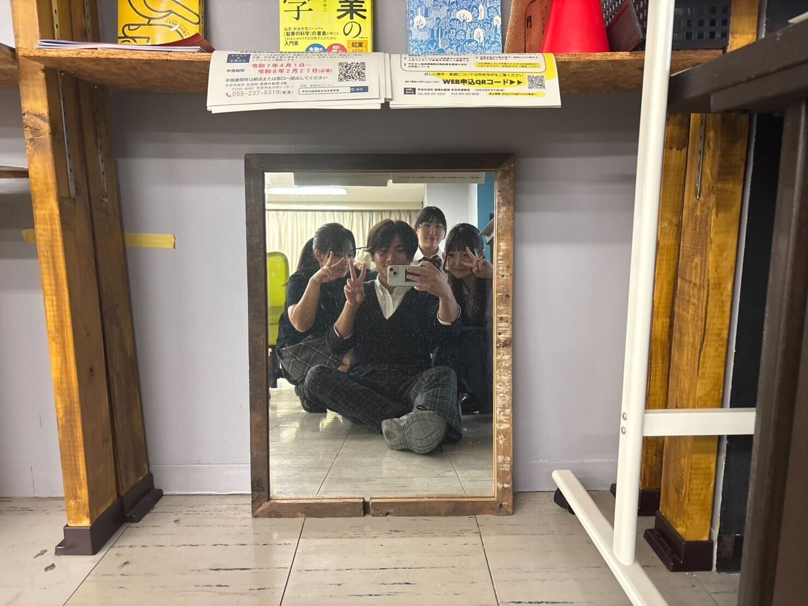
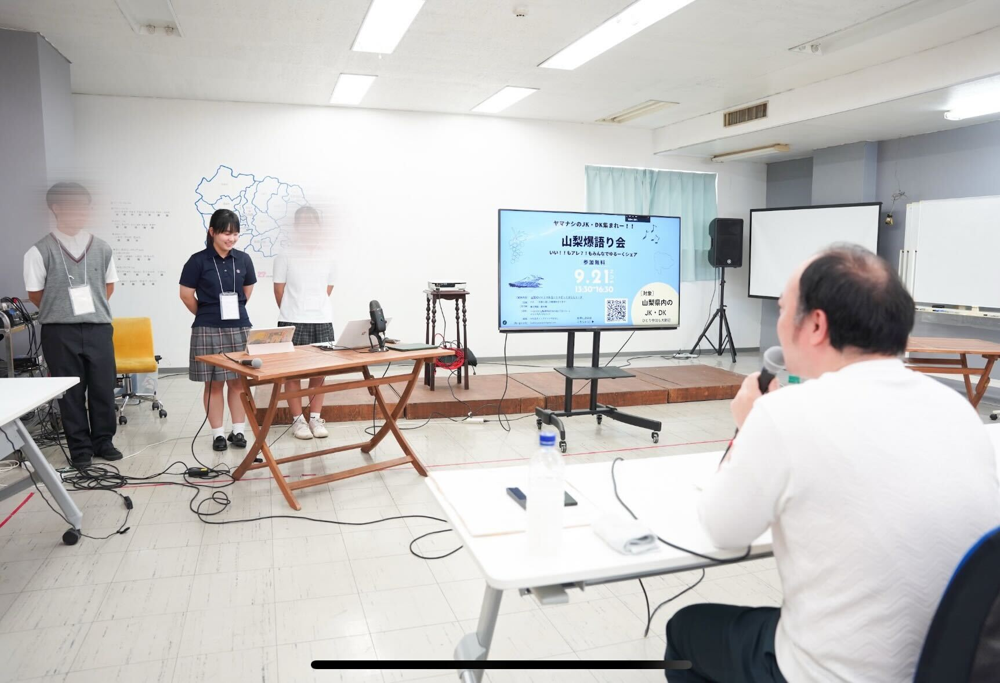
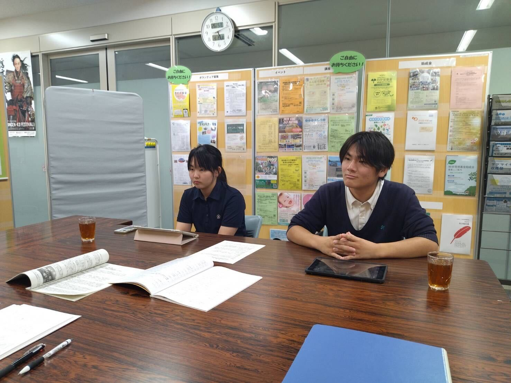

放課後、
地域で奮闘中
...
小さな一歩の
積み重ねが、
やがて大きな
輪となるように
「Arc」という名前には、私たちは
一人ひとりが小さな“孤”だけれど、
仲間とつながることで大きな
“縁（えん）”になれるという
想いを込めています。
また、物語の主人公の成長を描く
“ストーリーアーク”
のように、メンバーそれぞれが
主役として成長し、
地域の方々との関わりの中で
私たち自身も変化していきたい。
――そんな願いをこの名前に託しました。
view more

運が導いた出会いが
志に変わった。
志から
託したい希望に広がった。

地域に
"笑顔"と"縁"
を生む架け橋になりたい
代表挨拶

私たちは
活動しています
Noteを見る→
トップ
Arcとは
代表挨拶
JKL
NMO
PQR